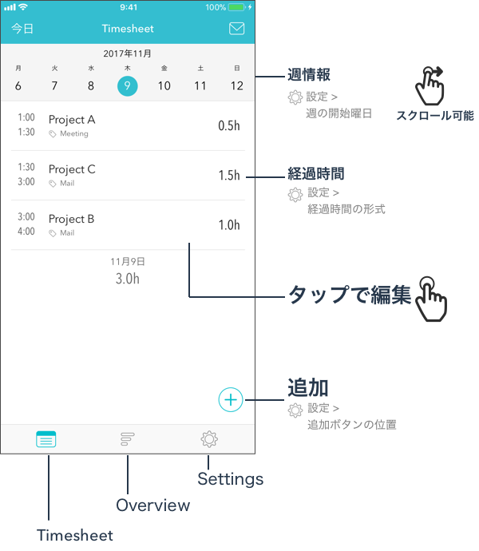
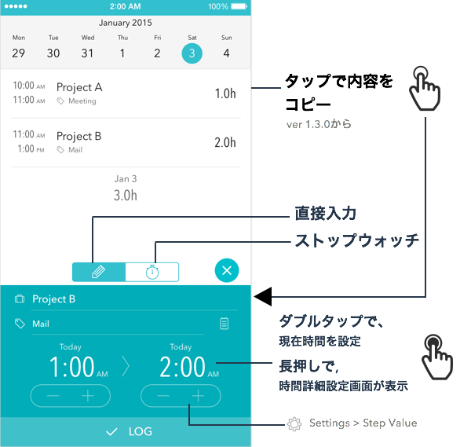
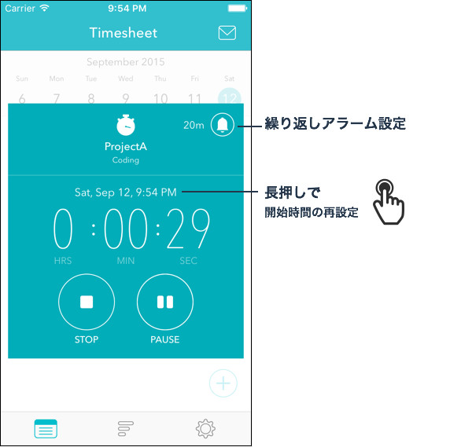

Help
TIPS
FAQ / TROUBLESHOOTING
TIPS



FAQ / TROUBLESHOOTING
- アプリを起動すると落ちる
-
iPhoneの「カレンダー」が正常に動作していない場合、Timesheetアプリが起動できない事があります。
iPhone標準アプリの「カレンダー」アプリを起動し、予定を追加ができるかどうか、追加した予定が参照できるかどうかを確認してください。
-
予定が追加できない場合、復旧のため、以下をお試しください。
- カレンダーの内容が消えないよう、バックアップを取る
- iPhoneの設定 > iCloud 画面の 「カレンダー」 がオフになっていれば、オンにする
「カレンダー」 がオンになっていれば、オフにして再度オンにする
- 「カレンダー」アプリを再起動し、正常に動作するようになったかを確認する。
-
正常に復旧した場合、iCloudのカレンダーをオフに戻しても大丈夫です。
iCloudをオンになっていたのをオフにした場合、過去のデータが消えてしまう場合があります。
復旧させるためには、iPhoneの設定 > メール/連絡先/カレンダー 画面の カレンダー設定の「同期」を "すべてのイベント" に設定した後、
「カレンダー」アプリを起動して確認して下さい。
- 記録したデータが消えてしまった
- iCloudのカレンダーを使用していた場合は、ほとんどの場合、同期期間を変更することによりデータを復旧出来ます。
- iPhoneの 設定 > メール/連絡先/カレンダー 画面を開く
- カレンダーの[同期]設定を、[すべてのイベント]に変更する
- iPhone標準の「カレンダー」アプリを起動して、データが復旧したかを確認します。
- ローカルカレンダーを使用していた場合、iCloudで「カレンダー」をオンに変更すると消えてしまう場合があるようです。
この場合、iCloudをオフにしてみてください。
- こちらも参考にしてください。iCloud：iCloud カレンダーのトラブルシューティング
- カレンダーが消えてしまった
- カレンダーが、「カレンダー」アプリで表示できるか確認して下さい。
iCloudカレンダーの場合、iClouldの設定でカレンダーが無効になっている可能性があります。
設定 > iCloud の カレンダー と、 設定 > メール/連絡先/カレンダー > iCloud のカレンダーの設定をONにし、「カレンダー」アプリでカレンダーが復元されたかを確認して下さい。
- Macアプリはありますか？
- ありません。
ですが、Mac標準のカレンダーアプリなどを使って、Mac上で登録することが可能です。
タグの情報は、メモ欄の1行目にカンマ区切りで入力します。
メモの情報は、メモ欄の2行目以降に入力します。(メモはTimesheet ver1.3にて追加)
- バックアップする方法は？
-
使用しているカレンダーのバックアップ機能をお使いください。
iCloudカレンダーを使用している場合には、iCloudにデータが保存されています。
そのため、アプリを削除してもデータは保存されています。
さらにバックアップを行なうためには、Mac標準の「カレンダー」アプリを使うことで、ファイル書き出しが可能です。
こちらを参考にしてください。 iCal カレンダーデータをバックアップする方法
Googleカレンダーを使用している場合は、こちらを参考にしてください。 カレンダーをエクスポートする